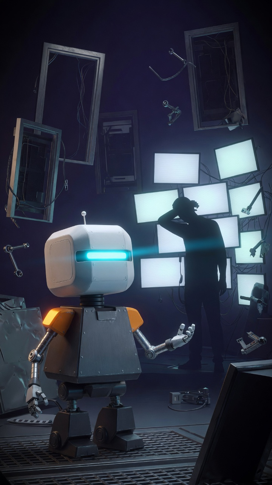
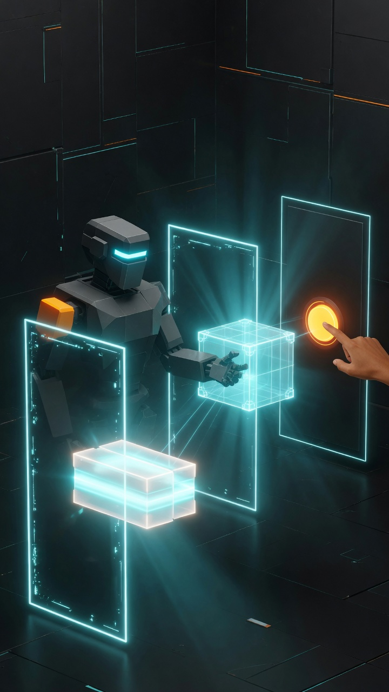
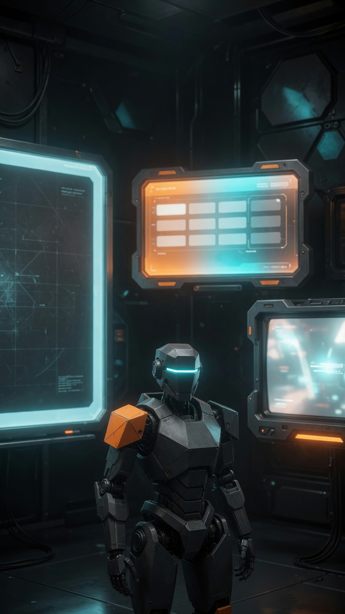

La casa · el vídeo
Mismo contrato que el creador de TikToks: 15 s · 9:16, tres escenas, Pix Fusion. El dibujo del gráfico puesto en movimiento: el silicio hace, el carbono decide, y todo aterriza en vender, hacer o emitir.
«Atajo detectado. Una sola puerta. El silicio hace. El carbono decide. Entras. El silicio arma el paquete. Tú das el sí. Vender, hacer o emitir. Si no llega ahí, no ha pasado. Menos clics. Más hecho.»



Plan generado con TikTokCore, el mismo motor de admiranext.com/tiktok. Fotogramas Grok Imagine, 9:16, sin texto en cuadro — el contrato del estudio. El relato escrito vive en el gráfico.